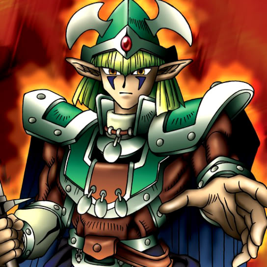

Celtic Guardian

Description: "While this card is face-up in the defense position, all effects involving the taking of a card's control are rendered ineffective."
STATS
ATK: 1400
DEF: 1200DECK COST
Deck Cost per Card: 31EFFECT NOT IMPLEMENTED
Fusion List (44 Possible Fusions)
- Celtic Guardian + Armaill = Flame Swordsman
- Celtic Guardian + Blue-Eyed Silver Zombie = Armored Zombie
- Celtic Guardian + Candle of Fate = Flame Swordsman
- Celtic Guardian + Castle of Dark Illusions = Dark Elf
- Celtic Guardian + Charubin the Fire Knight = Flame Swordsman
- Celtic Guardian + Clown Zombie = Armored Zombie
- Celtic Guardian + Crawling Dragon #2 = Sword Arm of Dragon
- Celtic Guardian + Curtain of the Dark Ones = Dark Elf
- Celtic Guardian + Dharma Cannon = Cyber Soldier
- Celtic Guardian + Dragon Piper = Flame Swordsman
- Celtic Guardian + Dragon Statue = Sword Arm of Dragon
- Celtic Guardian + Dragon Zombie = Sword Arm of Dragon
- Celtic Guardian + Exodia the Forbidden One = Dark Elf
- Celtic Guardian + Fiend's Hand = Armored Zombie
- Celtic Guardian + Fire Reaper = Armored Zombie
- Celtic Guardian + Flame Ghost = Armored Zombie
- Celtic Guardian + Flame Snake = Flame Swordsman
- Celtic Guardian + Harpie Lady = Punished Eagle
- Celtic Guardian + Hinotama Soul = Flame Swordsman
- Celtic Guardian + Left Arm of the Forbidden One = Dark Elf
- Celtic Guardian + Left Leg of the Forbidden One = Dark Elf
- Celtic Guardian + Leo Wizard = Dark Elf
- Celtic Guardian + Lesser Dragon = Sword Arm of Dragon
- Celtic Guardian + Lord of Zemia = Dark Elf
- Celtic Guardian + Maiden of the Moonlight = Dark Elf
- Celtic Guardian + Mask of Darkness = Dark Elf
- Celtic Guardian + Masked Clown = Dark Elf
- Celtic Guardian + Mavelus = Flame Swordsman
- Celtic Guardian + One-Eyed Shield Dragon = Sword Arm of Dragon
- Celtic Guardian + Phantom Dewan = Dark Elf
- Celtic Guardian + Right Arm of the Forbidden One = Dark Elf
- Celtic Guardian + Right Leg of the Forbidden One = Dark Elf
- Celtic Guardian + Shadow Specter = Armored Zombie
- Celtic Guardian + Skull Servant = Armored Zombie
- Celtic Guardian + Spike Seadra = Sword Arm of Dragon
- Celtic Guardian + The Judgement Hand = Judge Man
- Celtic Guardian + Versago the Destroyer = Dark Elf
- Celtic Guardian + Vishwar Randi = Dark Elf
- Celtic Guardian + Wicked Dragon with the Ersatz Head = Sword Arm of Dragon
- Celtic Guardian + Wings of Wicked Flame = Flame Swordsman
- Celtic Guardian + Witch's Apprentice = Dark Elf
- Celtic Guardian + Witch of the Black Forest = Dark Elf
- Celtic Guardian + Yamatano Dragon Scroll = Sword Arm of Dragon
- Celtic Guardian + Zombie Warrior = Armored Zombie